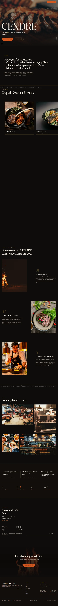
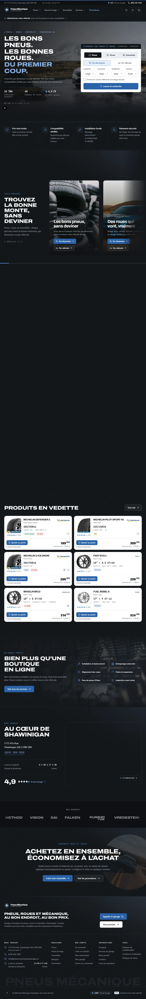
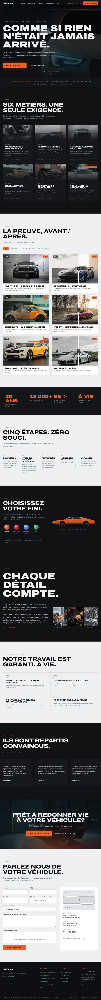
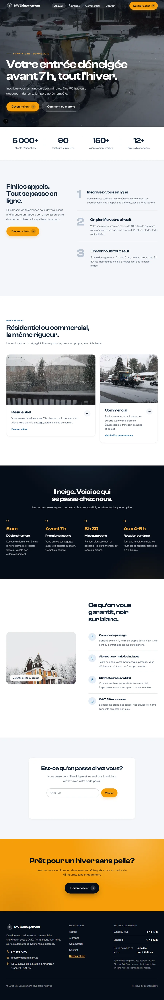
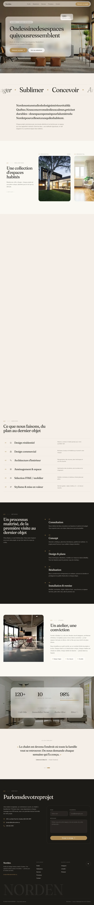

12 h
Le délai de réponse, jours ouvrables. Souvent moins.
Web, immobilier, automatisation · Québec
APED Agence
On code ce qui fait rouler votre entreprise.
Site web, boutique en ligne, automatisations, logiciel interne. Rien de gabarit. Le code est à vous.
Jour 5
Les premières maquettes. Vous voyez avant qu'on code.
=
Le chiffre du premier appel est celui de la facture.
1
Interlocuteur, du premier appel à la mise en ligne.
Tout
Le code, l’hébergement, l’adresse web. Un autre peut reprendre demain.
0
Mouchard, traceur, service extérieur. Votre site ne dépend de personne.
7
Métiers : site, boutique, automatisation, logiciel, application, visite 360, vidéo.
Québec
Conçu, codé et livré ici, du premier trait à la mise en ligne.
Ce qu’on livre.
Quatre chantiers. Si votre besoin tombe entre deux, on vous le dit au premier appel, avec le prix.
01Sites web et boutiques
Un site qui travaille pendant que vous dormez.
Vitrine, catalogue, page de vente. Il se charge avant que la page d’à côté ait fini de clignoter, il se trouve sur Google, et vous le modifiez vous-même.
- Design fait pour vous, pas acheté
- Référencement Google monté au départ, jamais vendu en option
- Testé sur téléphone avant l’écran d’ordinateur
- Réservation et paiement en ligne quand ça s’applique
- Mise en ligne incluse, hébergement ouvert à votre nom
- Textes et photos modifiables par vous, sans nous appeler
2 à 4 semainesEt le code vous appartient, adresse web comprise.
02Automatisation et IA
Les tâches que personne n’aime faire se font toutes seules.
Vos outils se parlent enfin. La soumission arrive, la fiche client se crée, la facture part, le rappel part. Vous récupérez vos soirées.
- Diagnostic de vos processus, offert et sans engagement
- Factures, rappels et suivis qui partent sans vous
- Vos outils reliés entre eux : CRM, courriels, comptabilité, rapports
- Un agent IA entraîné sur vos vraies réponses, pas sur un modèle générique
1 à 3 semainesLe calculateur plus bas vous dit ce que ça vaut chez vous.
03Immobilier et visibilité locale
Quand quelqu’un cherche dans votre coin, c’est vous qui sortez.
Fiche Google tenue à jour, carte de zone, visites virtuelles, avis gérés. On vise le quartier, pas la province.
- Fiche Google Business montée et tenue à jour
- Carte et zone de service sur votre site
- Fiches de propriétés et visites virtuelles
- Avis clients gérés, pas subis
- Référencement dans votre quartier, pas juste au Québec
1 semaineLa visite 360 de la section suivante est faite comme ça.
04Logiciels et applications
Quand aucun logiciel du commerce ne fait la job.
Inventaire, horaires, suivi de chantier, portail client, espace membre. Bâti sur votre façon de travailler, pas l’inverse.
- Application web ou mobile, portail client, espace membre
- Outils internes : inventaire, horaires, suivi de chantier
- Branché sur ce que vous utilisez déjà, et le code reste à vous
1 à 3 moisUn autre développeur peut reprendre le projet demain matin.
Vous hésitez entre deux chantiers ? Nos deux documents parcourent les treize domaines qu’on couvre, tâche par tâche, avec le temps et l’argent que chacune coûte. 91 pages, gratuites, sans courriel.
Voir ce qui s’automatise dans votre métierDes sites en ligne, pas des maquettes.
Cinq projets livrés. Chaque cadre contient la vraie page d’accueil, au complet. Elle ne bouge pas toute seule : survolez le cadre, ou cliquez dedans, et vous la parcourez à votre rythme.





Le style change selon le métier.
Treize secteurs, treize aperçus. Chacun montre la fonction qui fait la différence dans ce métier-là. Survolez ou tabulez pour voir, cliquez si c’est le bon.
Commerce et service au public
Métiers et chantier
Santé et professions
bistro-nordet.caOuvert · 17 h 30
NORDET
Bistro de marché — Limoilou, Québec
Réserver une table


Tartare de cerf, câpres de sureau24 $
Pétoncles de Gaspé, beurre noisette29 $
Flanc de porc de Charlevoix, chou brûlé32 $
Omble chevalier, cresson des Éboulements34 $
Tarte au sirop, crème du 3e rang12 $
Table pour 2 — jeudi 8 octobre
17 h 3018 h 1519 h 0020 h 30
MER — DIM17 h 30 à 22 h418 555-01733 tables libres ce soir
mailleetlin.caPanier · 3
Tricots/Mérinos du Bas-Saint-Laurent/18 modèles
Chandail Malbaie168 $ — 4 tailles
Tuque Rimouski46 $ — 6 coloris
Écharpe Portneuf92 $ — 3 coloris
Cardigan Témis214 $ — 5 tailles
Bas de laine28 $ — 4 tailles
salon-verchere.caRendez-vous en ligne
VERCHÈRE
Mardi 14 octobre
3 stylistes
9 h 00
Coupe et brushingMaude L.65 $COMPLET
10 h 30
Coloration racinesAriane P.120 $COMPLET
12 h 15
Balayage completMaude L.185 $COMPLET
14 h 30
Coupe hommeFélix T.38 $LIBRE
15 h 45
Mise en plisAriane P.55 $LIBRE
17 h 00
Coupe et barbeFélix T.52 $COMPLET
450, 3e Avenue, Verchères450 555-01982 places encore libres aujourd’hui
atelier-force.caHoraire
ATELIER FORCE
Semaine du 12 octobre
LUN
MAR
MER
JEU
VEN
SAM
DIM
6 h 00HaltéroJulie R.
6 h 00MétaboliqueKarl B.
6 h 00HaltéroJulie R.
6 h 00MétaboliqueKarl B.
8 h 30Sortie longueKarl B.
18 h 30MobilitéInes T.
18 h 30ForceJulie R.
18 h 30MobilitéInes T.
17 h 00Plateau libresans réserv.
10 h 00Plateau libresans réserv.
Haltérophilie — 6 h 0018 / 20
Métabolique — 6 h 00COMPLET
Mobilité — 18 h 3011 / 24
Force — 18 h 3020 / 22
Sortie longue — 8 h 307 / 15
auberge-capbrule.caRéservation directe
Chambre Vue-Fleuve
Lit très grand · foyer · 32 m²
Déjeuner inclus, servi de 7 h à 10 h
Départ 11 h — annulation gratuite 48 h
207 $ la nuit, taxes en sus
OCTOBRE 20262 adultes
DLMMJVS
27282930123
45678910
11121314151617
18192021222324
25262728293031
3 nuits — 12 au 15 oct.621 $
mecanique-boisvert.caSoumission
BON DE TRAVAIL 4412
Multisegment 2019 — 148 320 km — dépôt 7 h 40
Prêt jeudi 16 h


CODEDESCRIPTIONHMONTANT
BRQ-221Plaquettes avant, jeu complet0,8184,00
BRQ-118Disques avant, la paire1,2246,00
HUI-05Vidange 5W-30 synthétique0,479,95
INS-01Inspection 42 points0,545,00
Sous-total554,95 $
TPS + TVQ82,96 $
Total637,91 $
construction-larivee.caChantier 07
Résidence des Pins
Saint-Bruno · 3 étages · 11 unités
En cours


PHASESEPTOCTNOVDÉCAVANC.
Excavation100 %
Fondation100 %
Charpente82 %
Toiture0 %
Finition0 %
Livraison 12 décembre 2026Budget 2,4 M$0 incident en 148 jours
paysages-du-nord.caDéneigement
Tournée 03 — départ 5 h 15
112, rue des TremblesFAIT 5 h 22
128, rue des TremblesFAIT 5 h 26
4, croissant BellevueFAIT 5 h 34
17, croissant BellevueFAIT 5 h 41
230, montée du LacEN COURS
244, montée du LacÀ FAIRE
9, impasse des CèdresÀ FAIRE
42 / 58entrées faites — fin prévue 8 h 05
clinique-des-cedres.caPrise de rendez-vous
1Service
2Praticien
3Heure
Dre Camille Nadeau
Physiothérapie · salle 2 · 45 minutes
jeu. 8 oct.
8 h 158 h 459 h 15
9 h 4510 h 1511 h 00
13 h 3014 h 1515 h 00
15 h 4516 h 3017 h 15
Rendez-vous confirmé
Jeudi 8 octobre, 9 h 45 — 1250, rue des Cèdres, Repentigny
Carte RAMQ à présenter · rappel par texto 24 h avant
immeubles-basseville.caFiche 28 441 907


749 000 $
1284, rang Sainte-Marguerite, Saint-Élie-de-Caxton
Nouveau
CHAMBRES4
SALLES DE BAIN2
SUPERFICIE2 140 pi²
ANNÉE2011
Sophie Cadieux, courtière450 555-0142Visite libre dimanche 13 h à 15 h
gagne-roy-avocats.caDossier 2026-0184
Gagné Roy
Droit des affaires — Québec et Lévis
Me Antoine Roy
1.1Objet de la convention entre actionnaires
1.2Définitions et règles d’interprétation
2.1Droit de premier refus
2.2Clause d’entraînement
3.1Rachat en cas de décès
4.1Non-concurrence — 24 mois
Échéancier
12 sept.Mise en demeure
4 oct.Dépôt de la demande
21 nov.Audience — salle 4.12
26jours avant
l’audience
l’audience
oceane-brunelle.photoSéries
OCÉANE
BRUNELLE
BRUNELLE
01Nord-Côtier2024
02Ateliers2025
03Marées2026
04Portraits2026
05Bois debout2026
Bas-Saint-Laurent418 555-011738 images dans la série
votre-domaine.caAtelier
Votre industrie ici
On part de la matière, pas d’un gabarit.
Les grains arrivent dispersés et s’assemblent. Votre site se construit à partir de ce que vous faites vraiment — pas d’un thème acheté et repeint.
13secteurs couverts
0gabarit réutilisé
4–6semaines
Démo · Immobilier
L’acheteur fait le tour avant de prendre rendez-vous.
Trois pièces, un seul lien. Il arrive sur la terrasse, entre au salon, monte à la chambre, depuis son téléphone et sans rien installer. Vous arrêtez d’ouvrir la porte à des gens qui repartent après deux minutes.

Visite 360 · 3 pièces
Terrasse, salon, chambre. Rien ne se télécharge avant votre clic.
Chaque pièce s’ouvre en 2048 px puis monte en 4096 px toute seule, une fois affichée. Au clavier : flèches pour regarder autour, + et − pour le cadrage, tabulation pour atteindre les passages d’une pièce à l’autre. Le plan en bas à gauche fait la même chose à la souris.
Panoramas de démonstration : les trois pièces sont celles d’une même propriété, Lythwood Lodge (KwaZulu-Natal), photographiées par Greg Zaal et publiées par Poly Haven en CC0 — domaine public, usage commercial libre, aucune attribution exigée. Moteur Pannellum 2.5.7 (MIT), hébergé sur ce serveur. Aucune requête vers un tiers.
On ne vous demande rien
Combien vous coûte le travail fait à la main.
Choisissez votre industrie, poussez les trois curseurs. Les deux chiffres suivent. Le détail est replié dessous, si vous le voulez.
Heures récupérées par semaine
0 h
Ce que ça vaut par année
0 $
Trois réglages, c’est tout
Ajuster en détail
Heures par semaine passées sur
Votre semaine, avant et visée
À automatiser en premier
Tous les curseurs sont à zéro. Remontez-en un pour voir par où commencer.
D’où sort ce chiffre ? La méthode complète est dans notre document sur l’automatisation : 42 pages, 13 domaines, chaque chiffre avec sa source.
Télécharger, sans courrielLe détail du calcul
Jours de travail récupérés par an0
Ça équivaut à combien d’employés0
Heures facturables rendues0 $
Erreurs manuelles évitées0 $
Revenus gagnés, réponse plus rapide0 $
Même méthode que notre document sur l’automatisation : une minute par semaine récupérée vaut 28 $ par année, à 35 $ l’heure sur 48 semaines. Le taux de récupération change selon la tâche, de 50 à 90 %, parce qu’aucune ne tombe à zéro. C’est un ordre de grandeur, pas une soumission.
À la main contre automatisé.
Minutes par jour, sur des tâches d’administration observées chez des PME. Les vôtres sortiront du diagnostic.
Une journée de huit heures, part passée sur l’administration
À la main
7 h 20
Une fois automatisé
1 h 44
Sur une journée de huit heures : sept heures vingt à la main, une heure quarante-quatre une fois automatisé. L’écart est de cinq heures trente-six par jour.
Le détail, tâche par tâche
Feuilles de temps et demandes de congé
60 min 15 min
75 %
Relance des soumissions sans réponse
60 min 9 min
85 %
Compte rendu d’appel et mise à jour du CRM
90 min 27 min
70 %
Statut de commande ou de dossier
100 min 20 min
80 %
Conciliation bancaire
90 min 23 min
75 %
Réactivation des clients inactifs
40 min 10 min
75 %
Comment ça se passe.
Quatre étapes, de l’appel à la mise en ligne. Vous approuvez chacune avant qu’on passe à la suivante.
-
On se parle
Trente minutes au téléphone. Votre entreprise, votre clientèle, et ce que le projet doit vraiment régler. On repart avec une proposition écrite, pas avec une intention.
Ce que vous recevez une proposition écrite, sans engagement
-
On dessine
Des maquettes que vous approuvez avant qu’une ligne de code existe. Vous voyez à quoi ça va ressembler, sur écran et sur téléphone, et vous demandez les changements pendant qu’ils coûtent une minute.
Ce que vous recevez les maquettes, écran et téléphone
-
On code
Vous voyez l’avancement en continu, sur une adresse à vous. Aucune boîte noire, aucune surprise le jour de la livraison, et le code s’écrit ici, pas à l’autre bout du monde.
Ce que vous recevez un lien qui montre l’avancement, chaque jour
-
On met en ligne
Mise en ligne, remise de tous les accès, et on répond encore après la facture. Le code, l’hébergement et l’adresse web sont à vous : un autre développeur peut reprendre demain matin.
Ce que vous recevez les clés, le code, et une réponse en 12 h
Vous parlez à la personne qui code.
APED est une agence québécoise. Pas de sous-traitance à l’autre bout du monde, pas de gestionnaire de compte entre vous et le clavier.
- 1Interlocuteur, du premier appel à la mise en ligne
- 0Gabarit acheté. On repart de la page blanche chaque fois
- 12 hLe délai de réponse, jours ouvrables
-
01
Le prix est dit au départ
Le chiffre du premier appel est celui de la facture. S’il doit bouger, vous le savez avant, pas après, et vous décidez.
-
02
Rien ne se code sans votre accord
Vous approuvez ce que ça va donner avant qu’on ouvre l’éditeur. Les changements se demandent pendant qu’ils coûtent une minute.
-
03
Le code vous appartient
Un autre développeur peut reprendre le projet demain matin. On ne garde rien en otage, ni le code, ni l’hébergement, ni l’adresse web.
-
04
Ça va vite
Premières maquettes en quelques jours, pas en quelques semaines. Vous voyez l’avancement en continu jusqu’à la mise en ligne.
Programme de référence
Vous présentez. On encaisse ensemble.
Un nom et un numéro suffisent. Vous n’avez aucune vente à faire, aucun suivi à donner, et rien à avancer.
Jusqu’à 5 000 $ par entreprise référée, versés à la signature. Aucun plafond sur le nombre de références.
- 01 Vous nous présentez « Appelle APED, ils refont des sites. » Un texto suffit.
- 02 Le contrat se signe On appelle, on chiffre, on livre. Vous n’y êtes pour rien.
- 03 Vous êtes payé Viré à la signature. Autant de fois que vous voulez.
Commission versée uniquement à la signature, selon la valeur du contrat. Le détail vous est donné dans le formulaire. Aucun plafond sur le nombre de références.
9 questions
Questions fréquentes.
Les neuf qu’on nous pose le plus, avec la vraie réponse.
Votre question n’y est pas
dorvalwilliam11@gmail.comRéponse en 12 h ouvrables. L’appel de 30 minutes ne coûte rien.
Combien coûte un site web ?
Ça dépend de l’envergure, et on ne publie pas de grille : aucun projet ne ressemble au précédent, et une grille publiée finit toujours par mentir dans un sens ou dans l’autre. Ce qu’on peut faire tout de suite, sans appel : l’estimation en 60 secondes vous donne votre fourchette à l’écran. Le chiffre ferme est dit au premier appel, et c’est celui de la facture.
L’automatisation, ça veut dire quoi concrètement ?
On relie vos outils entre eux pour que les tâches répétitives se fassent seules : rappels de rendez-vous, factures, suivis, rapports. Vous gardez la décision, la machine fait la saisie.
Combien de temps ça prend ?
Deux à quatre semaines pour un site vitrine. Un à trois mois pour une boutique ou un logiciel, selon l’envergure. L’échéancier est confirmé avant qu’on commence.
Est-ce qu’on peut modifier le site nous-mêmes ?
Oui. Vous changez vos textes et vos photos vous-mêmes, sans passer par nous et sans surcoût.
Vous faites la maintenance après le lancement ?
Oui. Un plan mensuel couvre l’hébergement, la sécurité, les sauvegardes et les petites modifications. Ce n’est pas obligatoire : le site est à vous, avec ou sans plan.
Le site nous appartient à 100 % ?
Oui. Le code, l’hébergement et l’adresse web sont à votre nom : un autre développeur peut reprendre demain matin. Un site en ligne a toujours un coût d’hébergement — le vôtre est modeste, il vous est annoncé avant la signature, et vous pouvez le payer directement au fournisseur si vous préférez. Ce qui n’existe pas ici, c’est l’abonnement à l’agence qu’il faut payer pour garder l’accès à son propre site.
Quelles technologies utilisez-vous ?
React, Next.js, Node.js, Python. Rien d’exotique : un autre développeur peut reprendre le code demain matin sans vous appeler.
Et si le résultat ne me plaît pas ?
Les maquettes passent par vous avant le développement, et des révisions sont incluses à chaque étape. Rien ne va en ligne sans votre accord.
On n’est pas dans votre région, ça fonctionne ?
Oui. Tout se fait à distance, rencontres sur Google Meet incluses. On travaille avec des entreprises partout au Québec.
Cinq façons de nous joindre.
La première est la bonne dans neuf cas sur dix. Les quatre autres sont là pour le dixième.
Ce qui arrive après votre message
- 01 On le lit Une vraie personne, pas un accusé de réception automatique. le jour même
- 02 On vous répond Avec des questions s’il en manque, ou directement avec une proposition. sous 12 h ouvrables
- 03 Vous décidez Une proposition écrite, un prix ferme, et le droit de dire non. quand vous voulez
- 12 hLe délai de réponse, jours ouvrables. Souvent moins.
- 0 $L’appel de 30 minutes ne coûte rien et ne se facture jamais.
- ÉcritUne proposition écrite, sans engagement. Elle se lit, se garde, et se refuse.
- JamaisDe relance insistante, de liste d’envoi non demandée, ni de revente de vos coordonnées.
Ou simplement dorvalwilliam11@gmail.com